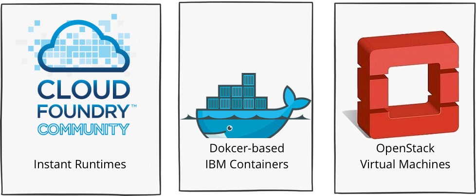
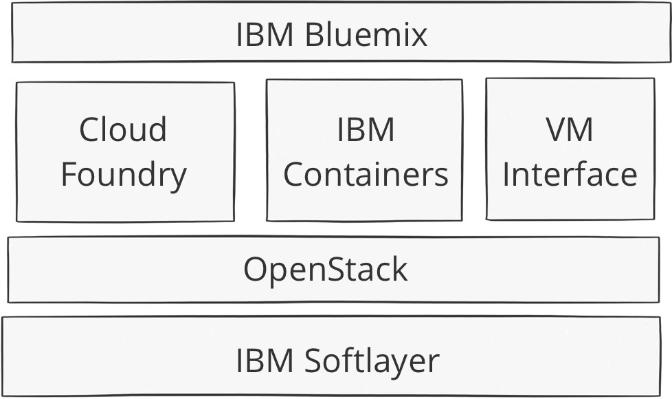
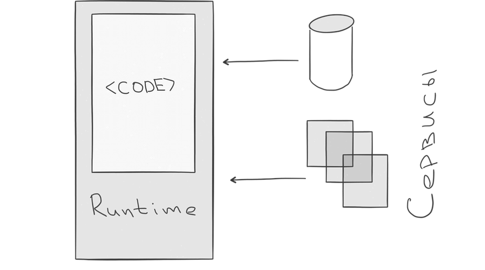
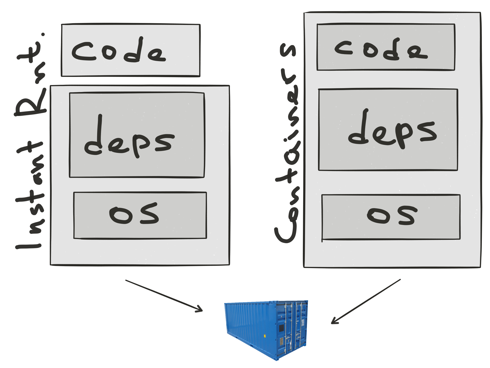

IBM Bluemix in the nutshell
Пётр Каламбет, Игорь Хапов
IBM
Science and Technology Center
Стандартный слайд про IBM Bluemix

Как это устроено?

Instant Runtimes
Архитектура приложения

Что Instant Runtimes значат для разработчика?
- Простота развёртывания - оперируем кодом
- Простота использования - приложение уже имеет закреплённое за ним имя
- Для увеличения производительности - плодим дубликаты приложения
- Локальный набор сервисв и набор сервисв в Bluemix могут отличаться
- Синдром "works on my machine"
ЧЗВ по Instant Runtimes
Почему так медленно исходынй код загружается в Bluemix?
Runtime (среда исполненеия) это:
- Образ ОС
- Дистрибутивы того, что будет исполнять код: Liberty, node.js, Python etc.
- Зависимости (внешние модули), которые не идут в составе нашего кода, а должны быть загружены автоматически
ЧЗВ по Instant Runtimes
Тогда почему так быстро?
Потому что из кода и среды исполнения создаются контейнеры
IBM Containers
Что такое контейнеры?
Контейнер - это функционал, вытекающий из особенностей ядра ОС Linux, который позволяет создавать незвисимые "песочницы" для всех приложений, исполняемых внутри контейнеров
Поскольку это особенность ядра OC Linux
- Накладные расходы на такую виртуализацию крайне малы
- Контейнеры под Windows, MacOS и т.д. - это виртуальные машины с OC Linux, на которых и запускаются конейнеры
Из чего состоит контейнер?
- Образ ОС
- Дистрибутивы того, что будет исполнять код: Liberty, node.js, Python etc.
- Зависимости (внешние модули), которые будет использовать наш код
- Код
Получившийся "сендвич" называется образом контейнера
На базе такого образа и запускается сам контейнер
Особенности контейнеров
- Жизненный цикл максимально прост, если что-то случилось, убиваем существующий контейнер и поднимаем на базе закешированного образа новый
- Ничего не хранится локально
- Для хранения используются внешние ресурсы
Что IBM Containers значат для разработчика?
- Оперируем образом
- 100% одиаковая воспроизводимость кода и окружения
- Для увеличения производительности - плодим дубликаты контейнеров
- Для IBM Containers использоване Bluemix сервисов возможно, но через proxy Instant Runtime прилоежние
- Пока об оркестрации контейров надо думать самому
Сухой остаток

Как это устроено?
Что такое OpenStack и ICM ?
- OpenStack - open source IaaS решение
- IBM Cloud Manager = OpenStack
- Почему ICM ?
- SoftLayer images in Bluemix
IBM Virtual Machines
Основаны на OpenStack
- Для тех кто не готов полностью перенести все на Instant Runtime
- Возможность использования public/private виртуальных машин
- Подключение к сервисам Bluemix
- Поддержка Bluemix logstash / Bluemix collectd агентов
Bluemix DevOps Services
- Auto-Scaling
- Monitoring and Analytics
- Delivery Pipeline
- Track & Plan
Auto-Scaling
- Утилизация CPU, %
- Утилизация JVM Heap, %
- Утилизация памяти, %
- . . .
При выходе за допустимые границы - плодим дубликаты или убиваем лишнее
Monitoring and Analytics
- Можем смотреть лог доступности приложения во времени
- Анализировать производительность
- Необычные всплески активности CPU
- Утилизация памяти
- . . .
- Собирать и анализировать логи, которые пишет само приложение
Delivery Pipeline
Позволяет автоматизировать процесс всех основных стадий: build, deploy, run и test
- Все этапы организуются в конвеер (Pipeline)
- Каждый этап это:
- Входные данные (обновление исходного кода, окончание билда и т.п.)
- Набор работ (сборка исходных кодов, деплой в Bluemix, запуск тестов и т.п.)
- Онлайн редактор кода на базе Eclipse
Track & Plan
Agile(Scrum), управление проектами
Создание и управление work items, sprints и так далее
Спасибо!
Используйте стрелки вправо и влево или правый и левый края слайдов для навигации.
(Нажмите 'h' или начините переключаться между слайдами, чтобы скрыть это сообщение)